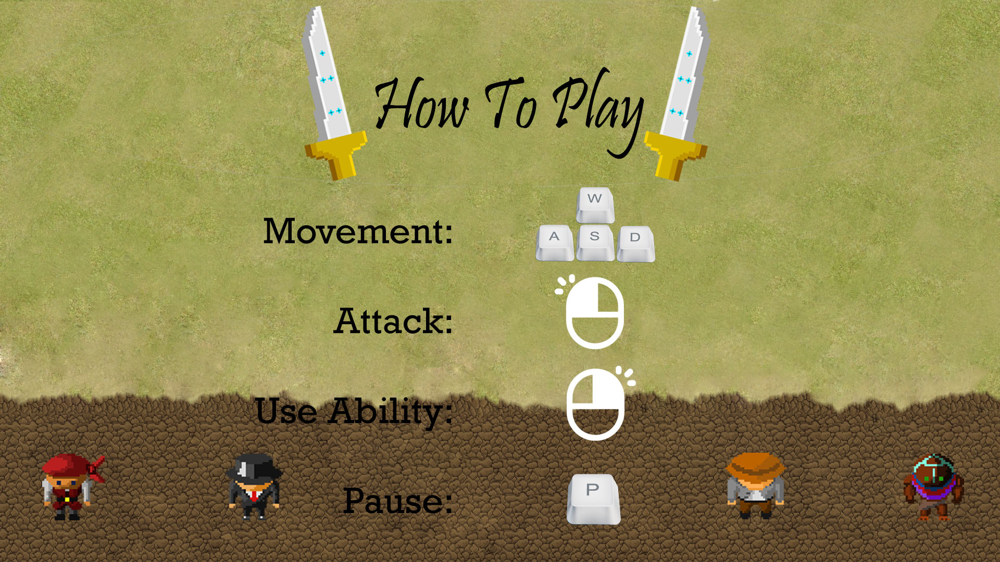

I created this game with Nelson Scott, Daniel Hawk, and Peter Lockhart during my Freshman year of college. It was made in C# with Monogame and revolved around the concept of following a sword as it changes hands during battle.

The game had a custom character creation feature and special abilities specific to each of the four factions. My main role was with the map generation which was completely procedural.